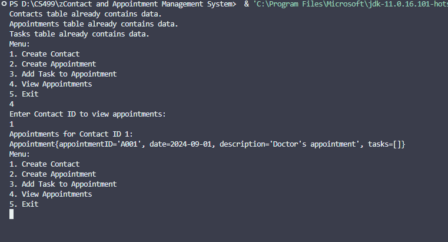
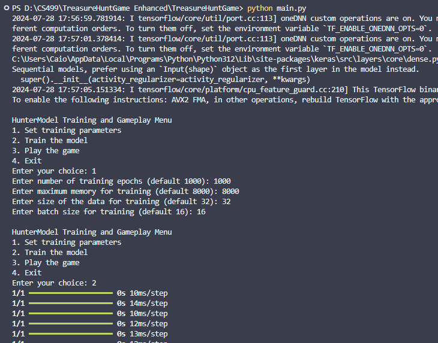

Home
Welcome to my professional ePortfolio. Here, you can explore my projects, view my code review, and read my self-assessment.
Professional Self-Assessment
I started my journey in Computer Science in January 2022 with a passion for fixing computers and the general world of technology. This came after I had already done two years of a Political Science major. When I first started, my focus was on catching up with those around me who seemed to know so much more. I remember the first day I used leetcode and attempted to solve the legendary “Two Sum” problem. I used pen and paper to sketch out an algorithm that involved the lesser efficient nested loop solution. The rush I felt when solving it was extraordinary. I spent the next 2 weeks, which happened to be a vacation, running through a “25 Python Practice Problems”, trying to learn all that I could. This set the passion in me for all things programming.
Over the past couple years, my experience and knowledge have grown significantly. I have taken it upon myself to grow outside of my education. I’ve spent hundreds of hours creating my own mini projects that will never see the light of day outside of my external drive. Through all of this work and dedication I've developed a sense for quality code, detail and a strong security mindset, which are all essential in software engineering. My approach to coding has become more organized and planned out, with an emphasis on breaking down projects into smaller sections and conducting many rounds of testing on each component.
Now, with the knowledge I've gained, I'm inspired to take my passion to the next level. My vision has expanded beyond just building programs—I want to start my own tech company that brings innovation to the forefront. I’m driven to create solutions that not only work but also push the boundaries of what's possible in the tech world.
Code Review
The actual video file for each artifact was too larget to be uploaded to github. As a replacement please view this outline that was used as a script for the videos.
Code Review OutlineArtifacts
Artifact 1: Contact and Appointment Management System
This project involved creating terminal applications for managing contacts, tasks, and appointments, and ensuring they were correctly tested.
View CAMS Enhancement Summary: Integrate contacts, tasks, and appointments into a cohesive system with robust testing. Add features allowing contacts to schedule appointments with each other and track tasks within those appointments.
Skills Demonstrated: Integration of complex systems, testing, local database usage, and system design.
Artifact 2: Machine Learning Model, Treasure Hunter
This model solves the treasure hunt game using advanced machine learning techniques.
View Treasure Hunter Enhancement Summary: Improve performance and documentation of the model. Enhance the show function for better clarity and add a Python CLI for parameter adjustments.
Skills Demonstrated: Machine learning, performance optimization, documentation, user interface improvements.
Artifact 3: PagePal with Admin Panel and User Sessions
Local database for a mobile app project, focusing on efficient data storage and retrieval.
View PagePalEnhancement Summary: Enhance data handling, add a permission system for admin accounts, and implement a database dump feature.
Skills Demonstrated: Database management, data efficiency, access control, industry best practices.
Contact
If you would like to get in touch, please reach out via LinkedIn
LinkedIn: Me